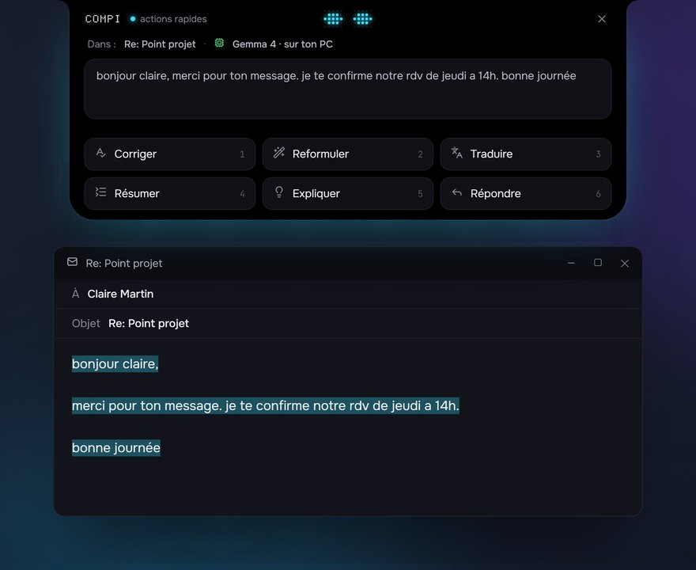
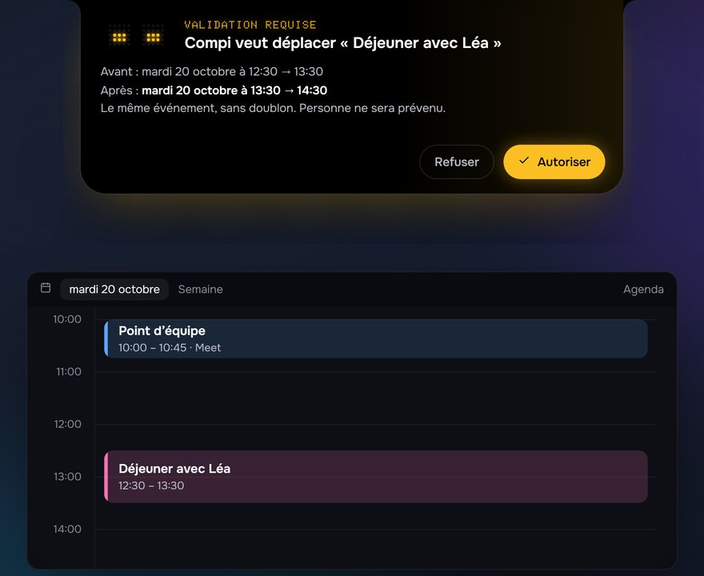
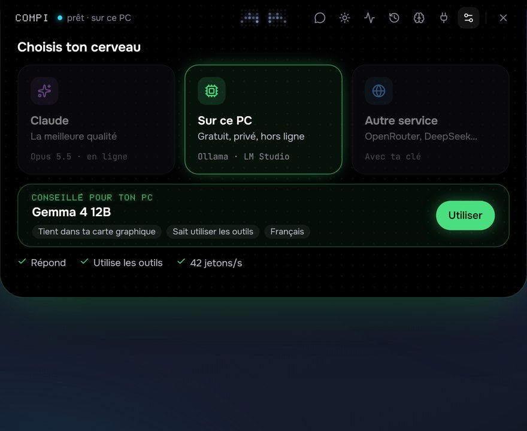
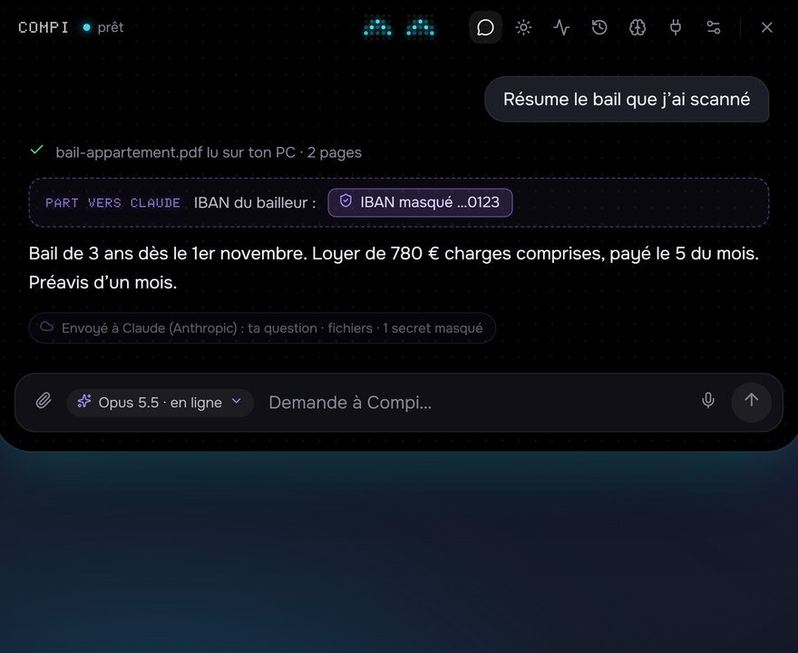
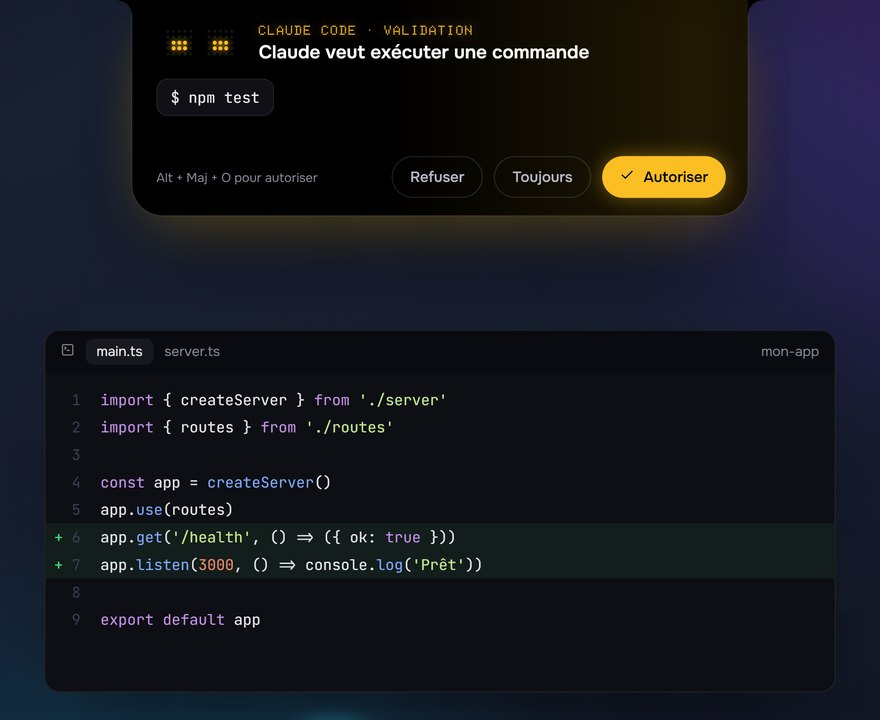
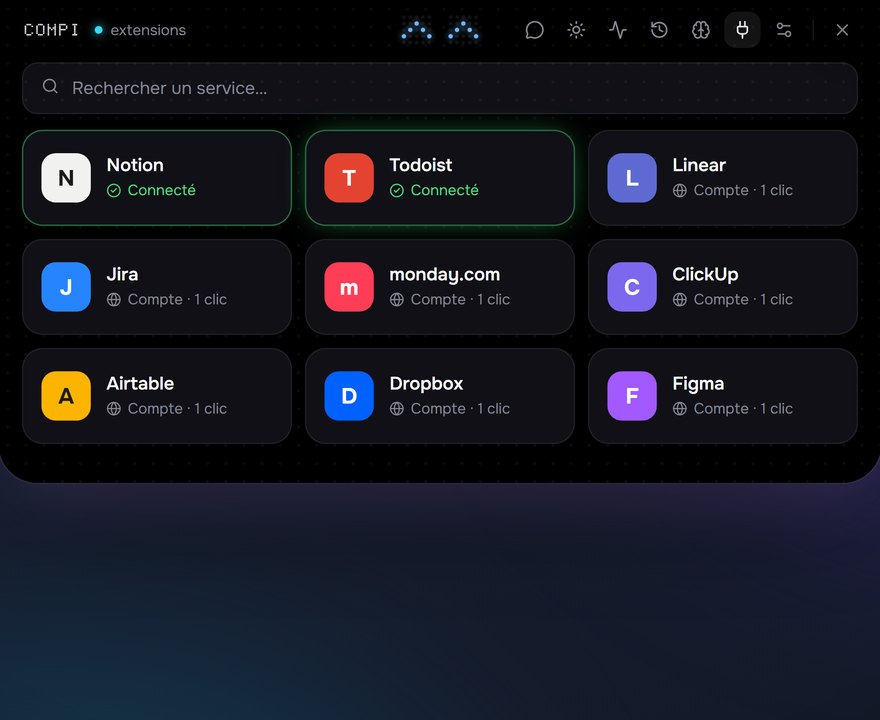
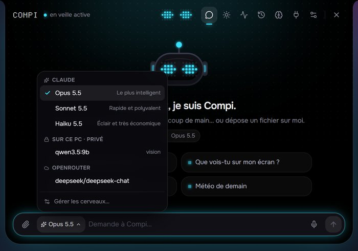

Claude
- Qualité
- la meilleure
- Prix
- à l’usage (ta clé API)
- Tes messages
- envoyés à Anthropic
- Hors ligne
- non
Windows 10 et 11 · libre et gratuit
Compi vit dans un îlot noir collé en haut de Windows. Il discute, agit sur ton PC avec ton accord, et peut tourner 100 % en local.
Qu’est-ce que j’ai aujourd’hui ?
Le film
Ce qu’il sait faire
Au repos, c’est une pastille avec le visage d’un petit robot. Ouvert, c’est un assistant qui connaît ta journée et ton PC.
Agenda (Google, lien .ics ou connecteur), e-mails Gmail, météo, rappels.
Sur n’importe quel texte sélectionné, dans toutes tes applis : corriger, reformuler, traduire, résumer.
Déplacer un rendez-vous, ranger un dossier, régler le son, ouvrir une appli. Une carte avant chaque action.
Ta voix est transcrite sur ton PC, jamais envoyée. Il peut aussi te répondre à voix haute.
PDF (même scannés), Word, Excel, et une recherche qui comprend le sens.
Notion, Todoist, Linear, Jira… Et tes sessions Claude Code, pilotées depuis l’îlot.
« Chaque lundi à 9 h, résume mes e-mails », et ce qu’il sait de toi, que tu lis et corriges.
Musique en cours, minuteur, alerte avant chaque réunion.






Ton cerveau, ton choix
En local, Compi regarde ta machine et te conseille un modèle. Il installe Ollama et ce modèle en un clic, seulement si tu le décides. Et tu changes de cerveau quand tu veux.
100 % local
Change de cerveau à tout moment, d’un clic sur la pastille de la zone de saisie : un modèle sur ton PC pour un document privé, Claude pour une question difficile, un autre service si tu préfères, puis retour au local. Sans abonnement ni compte Compi : le local est gratuit, et en ligne tu paies seulement le service que tu choisis, avec ta clé.
Avec le même fournisseur, la discussion continue. Avec un autre, Compi en ouvre une nouvelle.

Confidentialité
Compi n’envoie rien à ses auteurs.
Vers un cerveau en ligne, pour chaque type de donnée (écran, fichiers, e-mails, agenda…) : Me demander, Toujours ou Jamais.
IBAN, cartes, mots de passe et clés sont masqués avant l’envoi, et chaque réponse dit ce qui est parti et vers qui.
Tes clés et jetons sont chiffrés par Windows.
Relis-la : une page web ou un e-mail peut cacher des consignes piégées.
Tout le détail est dans PRIVACY.md. Pour signaler une faille : SECURITY.md.
Installer
Il faut Windows 10 ou 11 (64 bits), Git et Node.js 22 ou plus récent.
git clone https://github.com/Dilraj7/Compi.git
cd Compi
npm install
npm run build:windist/Compi-Setup-0.1.0.exe. L’installateur n’est pas signé : SmartScreen affiche un avertissement, clique sur Informations complémentaires, puis Exécuter quand même.| Raccourci | Action |
|---|---|
| Alt + Maj + Espace | ouvrir Compi |
| Alt + Maj + C | actions rapides sur le texte sélectionné |
| Alt + Maj + V | maintenir pour parler (une fois la dictée installée) |
| Alt + Maj + O / N | autoriser / refuser une demande |
Connecter Google (agenda et Gmail), dépannage et développement : tout est dans le README.
Questions
Oui : Compi est libre (licence MIT) et gratuit. Avec Claude, tu paies Anthropic à l’usage, avec ta propre clé API. Avec un modèle sur ton PC, tout est gratuit.
Avec un modèle local, non. Avec Claude ou un autre service, ils partent vers ce service, et tu choisis pour chaque type de donnée ce qui peut partir. Compi n’envoie jamais rien à ses auteurs.
Non. Tu changes de cerveau à tout moment : la pastille sous la zone de saisie, ou Réglages › Cerveau. Par exemple un modèle sur ton PC pour tes papiers, puis Claude pour une question difficile. Avec le même fournisseur, la discussion continue ; avec un autre, Compi en ouvre une nouvelle.
Non. Une carte s’affiche avant chaque action sensible : déplacer un rendez-vous, ranger un dossier, ouvrir une appli… Un rangement ne supprime jamais rien, et Compi n’envoie jamais d’e-mail : il prépare un brouillon que tu relis.
Compi regarde ta machine et te conseille un modèle adapté. Compte au moins 8 Go de mémoire et 10 Go libres sur le disque ; une carte graphique NVIDIA ou AMD rend les réponses bien plus rapides.
Le moteur de l’agent (claude.exe, du Claude Agent SDK) appartient à Anthropic et n’est pas sous licence MIT : Compi ne le redistribue pas.
npm install le télécharge directement, puis npm run build:win crée ton installateur.
Pas pour l’instant : Compi est fait pour Windows 10 et 11.
Non. Aucun traceur, aucune statistique, aucune ressource venue d’ailleurs. Seul ton choix de thème (clair ou sombre) est gardé dans ton navigateur.